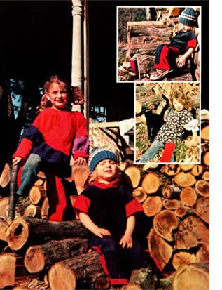
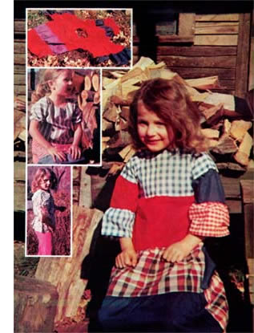
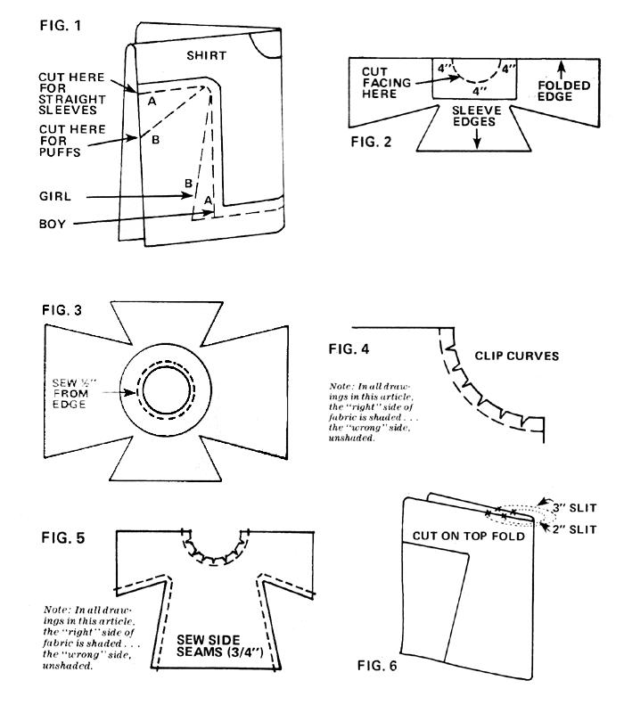
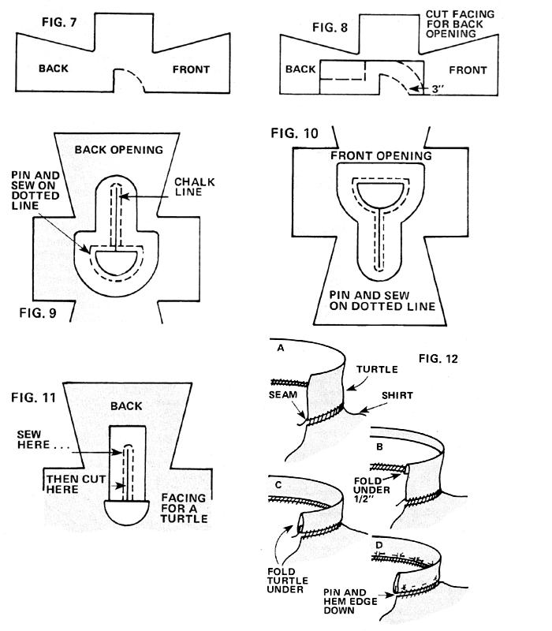
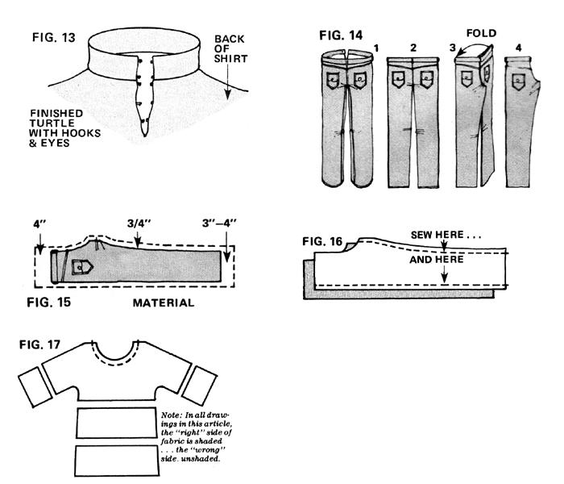

As any parent who's been to the clothing store lately knows, children's wear has become discouragingly expensive. Keeping your young'uns in duds doesn't have to spell economic ruin, however... not when you know Joan Dickenson's secret.
Have you shopped for children's clothing lately? Try it sometime: Price a five-year-olds outfit. Jeans-you'll find-are about $9.00 a pair, shirts maybe $5.00 each . . . not to mention socks, shoes, and underwear. By the time you get out of the store, chances are good you will have demolished the better part of a $20 bill.
Of course, rather than buy everything premade you could purchase the necessary fabrics and patterns and sew the same outfit (minus shoes, socks, etc.) yourself. In this case, you can count on paying $1.00 each for shirt and pant patterns, $4.00 for a yard of denim, $2.00 for one yard of cotton . . . a total, so far (not counting fasteners, thread, needles, etc.), of $8.00. A savings over readymades, to be sure . . . but still a lot of money.
Well, despair not. Because I'm here to tell you that there is a better way to keep your children in duds. All it involves is a little scrounge-and-make-do ingenuity, a little time, and (happily) no money at all. It's called recycling old clothes into new.
One day, I happened to hear (through the grapevine) that a neighbor was afraid to offer us hand-me-downs for fear we'd be insulted! Once I set that neighbor straight-and let others know, too, that we would be ecstatic if we received unwanted clothing-the garments began to pour in: shirts, pants, coats, dresses, pajamas . . . you name it! The moral: You can get free clothes from your friends and acquaintances . . . if you let them know your needs.
If your neighbors aren't forthcoming (or even if they are), put an ad in your local shoppers' news. A good many people-you'll find-are more than happy to give away worn-out apparel if you'll just come by and get it. And the nice thing is that unwearable adults' clothes can become lovely children's outfits.
Look around. I'm willing to bet that in less time than you think, you'll be able to accumulate more free material (in the form of discarded clothing) than you can use!
You'll get more out of your recycling efforts if you'll [1] think of discarded garments not as wearing apparel but as fabrics . . . and [2] remember that the fabric from several different worn-out items can oftentimes be pieced together to produce a finished children's outfit that looks prettier (by a mile) than any of the garments you started with. Keep these two hints in mind and your young'uns will soon be arrayed like royalty.
Below, I've given directions for making tops and pants. Bear in mind, how ever, that you're by no means limited to just these two kinds of garments. Once you've learned how to sew a top, for instance, it's no trick to create a dress (by lengthening the top) . . . or a vest (omit the sleeves) . . . or a coat (use heavy material for the top and add buttons) . . . or any of several other variations. What you make of your tops and trousers is up to you and your imagination!
For this, you'll need [1] an old shirt to use as a pattern, [2] a piece of material at least 6" wider than the "pattern" and at least twice as long (or twice the length you want the top to be plus 4"), and [3] a piece of matching or harmonizing fabric -approximately 15" squareto use as facing material. (Note: Your "pattern" must, of course, fit the intended wearer. Don't use a stretchy pullover-type top as a pattern or your finished garment may turn out too small.)
Begin by folding the shirt you intend to use as a pattern in half, sleeve to sleeve. Fold your material in half lengthwise (right side in), then widthwise, as shown in Fig. 1. Lay the pattern on it.
Next, trace around the pattern with chalk, leaving a 3/4" seam allowance. For straight sleeves, draw a sleeve line that's parallel to the top of the material (Fig. 1-A) . . . for looseflowing or puffed sleeves, draw a diagonal line to the armpit (Fig. 1-B). If the top is for a boy, draw straight sides . . . otherwise, make the sides flare diagonally outward (Fig. 1) .
OK. Cut your shirt material out along the chalk lines, then-using the.old shirt (your pattern) as a guide-cut a curve for the neck as shown in Fig. 1. (For purposes of demonstration, I'm going to assume your pattern shirt has a scoop neck.) Remember that you can always cut more fabric off later . . . but if you cut the neck opening too big, you can't "uncut" it. When you're done, open the material up and have your young'un try it on to see if the neck hole is too small.
Now fold the shirt in half, sleeve to sleeve, right side in (Fig. 2). Cut a rectangular piece of fabric the width of the neck opening plus 4" all the way around. This is your facing: When sewn to the neck, turned under, and pressed, it'll give the neck opening a smooth, finished edge.
Next, fold the facing lengthwise and pin it to the garment (Fig. 2). Trace the neck outline onto the facing and cut it to match the shirt's neck opening. Then remove the pins. open up the garment and facing, and round off the facing's edges with a pair of shears.
At this point, lay the shirt out flat and pin the facing to the top-right side to right sidemaking sure the neck openings line up. (See Fig. 3.) Sew over the pins 1/2" from the edge of the neck opening. (This is the only 1/2" seam in the garment . . . all the others are 3/4".) For a wear-resistant top, sew the seam twice.
Finally, remove the pins and clip the curved neck seam almost to the stitching, as shown in Fig. 4. (A curved seam naturally tends to bunch and pucker. Clipping prevents this.)
Now you're ready to sew the top's sides. Fold the shirt in half at the shoulders, right sides in . . . then pin the edges together as shown in Fig. 5 and sew a 3/4" seam along the garment's sides. (Sew these seams twice if you want a finished article of clothing that'll stand up to hard use.) Clip the underarm seams as you did the neck seam.
To finish the top, all you have to do now is [1] hem the sleeves and the bottom o the shirt, [2] turn the entire top right side out, and [3] turn the facing under, press and hem the facing's ragged edge and/o; tack it to the underside of the shirt. Congratulate yourself: You've just created a "brand-new" child's top . . for free!
Rather than sew a scoop neck as de. scribed above, you may prefer to make a neck with a slit opening at the front or back (that is, a slash neck). To do this, proceed according to the direction: given above until you're ready to cut the garment's neck opening . . . then-with the shirt folded-make a 4" to 6" cut (depending on your child's size) in the material as shown in Fig. 6.
Next, open the garment up and fold it sleeve to sleeve as depicted in Fig. 2. Mark a neck curve in chalk (on the front of the shirt only) to match the neck curve of the shirt you're using as a pattern. Cut a semicircular neck opening in the fabric as shown in Fig. 7. (The curved part of the semicircle faces forward . . . the flat part faces the back of the shirt.) On the "wrong" side of the material, mark an "F" for "front" and a "B" for "back" in chalk.
Now find a 10" X 16" (for a small child) or 12" X 18" (for an older one) piece of matching or contrasting fabric to use as facing material and fold it in half lengthwise. Assuming, for the sake of illustration, that you want a back opening (a front opening can be made just as easily), place the facing material on the folded garment as shown in Fig. 8 . . . then [1] pin the facing to the shirt, [2] cut the neck opening in the facing, using the shirt as a guide, [3] remove the pins, and
[4] trim the facing's edges as indicated by the dotted lines in Fig. 8. All right. Open the facing, lay it wrong side up on a flat surface, and draw a chalk line down its center, beginning at (and perpendicular to) the "flat" part of the semicircular neck opening. (See Fig. 9.) Open the garment and lay it out . . . then spread the facing on the shirt, right side to right side. Pin the two together as shown in Fig. 9, sew over the pins, and then remove the fasteners.
Now make a cut along the chalk line (through both garment AND facing) to within 3/8" of the seam. This slit is the shirt's "slash" or opening. All that remains is to clip the seam where the neck opening curves in front, fold the facing to the inside of the shirt, and press. If you want, you can also sew on buttons, snaps, or hooks and eyes.
To make a front (rather than a back) opening, turn your facing so that most of it goes below the neck curve (as shown in Fig. 10) . . . and proceed as described above.
Of course, if you really want to get fancy you can make a turtleneck for your basic top. Here's how it's done:
First, cut a semicircular neck opening in your garment as shown in Fig. 7. (Remember, the curved part always goes in front.) From scraps, cut a 3" X 8" rectangle of material to use as the facing. Spread the shirt out flat and lay the facing on it, right side to right side, as depicted in Fig. 11.
Next, draw a chalk line down the middle of the facing . . . then [1] pin it down as shown in Fig. 11, [2] sew over the pins, [3] take the fasteners out, and [4] cut along the chalk line to within 3/8" of the turn in the seam. Turn the facing to the inside of the garment and press.
Now measure the distance around the neck opening. From matching or contrasting scraps of material, cut a strip to this length plus 3" . . . this will be the turtleneck itself. Make the piece twice the width you want the finished neck to be, plus one inch.
Pin the neck strip to the shirt's neck openingright side to right side, with the shirt right side out-leaving 1-1/2" of the turtleneck material extending beyond each edge of the back slit. Sew over the pins and remove them. Then turn the lip of the turtleneck under 1/2", fold the turtleneck itself under, and pin the 1/2" fold to the neck seam on the inside of the shirt (Fig. 12). Hem the turtleneck's edge on the seam and remove the pins.
Finally, turn the 1-1/2" turtleneck extensions in and hem them in place. Finish off the neck with hooks and eyes, buttons and loops, or snaps. (See Fig. 13. )
It's easy to make elastic-top pants for children of either sex. Over the years,
I've cut down dozens of "unwearable" adults' slacks (given to me by neighbors) into serviceable and highly attractive pants for my young'uns. There's no reason why you can't do the same.
First of all, round up a good, roomy pair of children's pants that you can use to make a permanent fabric pattern (so that you won't have to use real pants as a guide every time). For the pattern itself, find some ugly material that you can't use for anything else. Fold the pants as shown in Fig. 14 and lay them on the ugly
fabric . . . then trace around the pants with chalk, leaving a 3/4" seam allowance around the crotch and legs plus 3" to 4" (or more, depending on how fast your child grows) at the bottom of the leg, and 4" above the waist. (See Fig. 15.) Cut along the chalk line . . . and you've got your pattern.
OK. Now scrounge up a pair of discarded slacks to use as material. (You'll find that one pair of adult pants makes one pair of children's trousers, with some nice scraps left over for quilting.) Rip open all the pants' seams and lay the material right side to right side, then place your leg pattern over one double thickness of material, trace around it with chalk, and cut on the chalk line. (Remember: You've already included seam and hem allowances in your pattern . . . there's no need to allow for seams again.) Do the same for the other double thickness of material. You should now have four leg-shaped pieces of fabric.
Next, match two of the pieces you've just cut right side to right side. Pin the leg halves together in the manner indicated by the dotted lines in Fig. 18 and sew over the pins. Remove the pins and repeat the procedure with the other two pieces of material.
Now turn one of the two "leg tubes" right side out and place that tube inside the other tube so that [1] the crotch edges match up and [2] the right side of the inner tube faces the right side of the outer tube. (It's a good idea-at this point-to examine an existing pair of pants to see how it's put together.) Pin the crotch together from the front of the waist to the back.
Before going any further, turn the pants right side out and have your youngster try them on for size. (Be careful, though, unless you've used safety pins to hold the pants together!)
After the pants have been tried on for size (and-if need be-adjusted for a better fit), turn one leg tube into the other as before (right side to right side) and sew over the pins in the crotch area. This is one seam that must be sewn twice or even three times (or reinforced with a strip of fabric), so take your time and do a good job. (If your young'uns are like mine, their pants always rip at the crotch!)
Next, turn both pant legs wrong side out and fold the top edge of the trousers down 1/2". Fold the edge down againabout 1-1/2" this time-and pin the first fold to the pants. Hem all but 2" of this edge in place. This makes the tube-or casing-through which you'll push the elastic waistband.
For the waistband itself, you'll need a piece of elastic that's at least 1/2" wide (3/4" is more comfortable) and equal in length to your child's waist measurement plus one inch. (You can buy elastic at most any department store or fiveand-ten. Or-if you're in the mood to be super-thrifty-you can recycle the waistband from an old pair of pants.) If you're using a drawstring instead of elastic, cut the string 18" longer than the waist measurement.
Attach a safety pin to one end of your elastic (or drawstring) and snake it through the casing. When it's halfway around, pin the dangling end of the elastic to the pants near the starting point so you won't lose it later. Continue to work the elastic all the way around and through the opening at the other end of the casing. Overlap the elastic's ends 1" inside the casing and pin it in place.
Once again, have your youngster try the pants on. Adjust the elastic to fit snugly but not tightly. Then-after your young model sheds the pants-tack the casing to the elastic (be sure you penetrate all layers of material), remove the pins, and sew up the 2" opening in the casing. Now hem the legs to the proper length . . . and your child's new homemade pantaloons are ready to be playground tested!
One delightful way to recycle several pairs of slacks at once is to use them to make harlequin pants for your boy or girl. Use blue fabric for the left front and right rear leg pieces, and red material for the right front and left rear pieces. Or make the top half of each leg green and the bottom half brown. Or . . . let your imagination go!
As I mentioned briefly before, it's easy to make a top into a dress: Simply sew additional strips of cloth to the bottom of the garment (Fig. 17). If you cut these strips longer than necessary and then gather them, you can create a pretty ruffle, too. (An 8"- to 12"-long ruffle at the bottom of a dress looks extraspecial, yet is easy to make.)
By the same token, when your young'uns shoot up too tall for their britches, you can sew strips of fabric to the bottom of each pant leg. (You can lengthen your daughter's pants with add-on ruffles.)
Sleeves can be made longer, too, the same as tops and trousers. For straight sleeves, simply cut strips of material wide enough to go around the wearer's arm (plus 31/2" for seams and added comfort) and sew the pieces to the shirt's arms. For puffed sleeves, cut longer strips of fabric and gather them as you pin them to the arms. With a little imagination, you should be able to create dozens of beautiful shoulder, elbow, and/or wrist puff combinations using matching and contrasting materials.
Baby clothes are easy to make, too. Try this: Using a one-year size shirt as a pattern, cut a top that's 12" longer than the baby. (Recycled blankets make especially cozy tops for wintertime. In spring or summer, use old towels for a durable, washable garment.) Make a facing for the neck opening and sew the side seams as you did for the basic child's top. Then sew a casing at the bottom of the shirt . . . snake a drawstring through the casing . . . hem the sleeves . . . and you have a "sleeping bag" top! Decorate the bag with embroidery, ap love.
Of course, the above techniques don't apply just to the making of children's clothing . . . you can also make adults' tops, pants, and dresses from recyclable fabrics (i.e., old garments). You'll need to do a fair amount of piecing to make pants and dresses for yourself this way, but-on the other hand-you'll certainly have a unique wardrobe when you're done! Andas a bonus-you'll accumulate plenty of scraps that can be made into bikinis, vests, headbands, sashes, pocketbooks, tote bags . . . you name it!
If there's one thing I hope I've made clear in these pages, it's that you don't have to pay high prices for children's wear. Not when-using the recycling techniques outlined above-you can make your own attractive, durable children's apparel for just the cost of thread and elastic. (The only clothes I've bought in the past four or five years were some blue jeans I got at Goodwill for 500 . . . and one of these days, I'll learn how to make them, too.)
Why not try making your own children's clothing? If my experience is any indication, I think you (and your youngsters) will be glad you did!
|
 Photos by The Author |
 |
 |
|
 |
 |
|